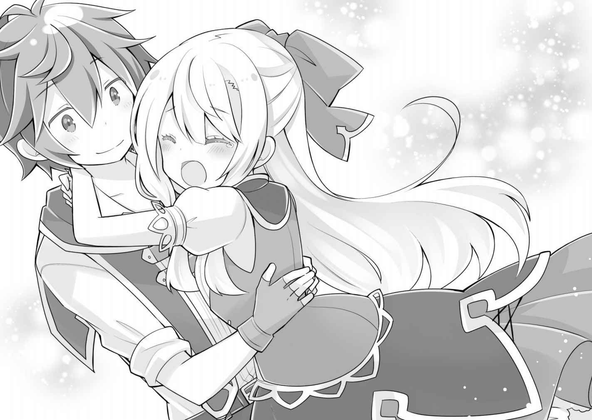

幕間 ルキア・ハスクバーナ ③
……また夢を見ていた。
まだ術が解けるほど時間は経っていない。そのはずなのに、術が解ける夢だ。
こういう夢は、自分に術をかけると時々見る。はやく自由になりたいという気持ちが、そういう夢を見せるのだとローザさんは言っていたものだ。
術が解けてすぐは、全身に虚脱感があり、目を開けるのも一苦労だ。
……でも、夢なんだから……別に目を開けなくてもいいよね。
ざわめきが聞こえる気がする。さっきまで感じていた温かさを、すぐ近くに感じる。
その温かさに、なぜだか、胸がどきどきしてくる。
曖昧な感覚の中……その夢は、なにか特別幸せななにかを見せてくれそうな予感がした。
私に駆け寄る、一人分の足音。
目を閉じているのに、不思議な光が目の前に広がっていくのがわかる。
胸が高鳴る。なぜかはわからないけれど。息もできないほど、心臓が暴れている。
これは、夢……？
私は声を上げようとして失敗。うめき声みたいなものしか出すことができない。
なにが起こっているのかわからないけれど……。わからないけれど──
「ルー」
すぐ側、耳元で囁かれた懐かしい声。何度も何度も、想い焦がれた声。
私をそう呼ぶのは。そう呼んでと頼んだ人は、たった一人しかいない。
「ルー。がんばったね。もう大丈夫だ」
これは幻だ。私の頭は追い詰められてどうにかなってしまったのだろう。
兄は……死んだのだ。
聞いた話などではない。私は真実を見てしまったのだから。その目で見たのだ。
だから、この暖かい手も、気遣わしげに頬に触れる指先も、私が頭の中で作り出した、自分に都合のいい幻なのだ……。
マリエラさんから、兄に似た人物の記憶を覗いてしまったから、だからこんな夢を。
（でも……いいか）
幻でもいい。この暖かさも、この眩いほどの光も。本物じゃなくたっていい。
……ううん、本当は。これが、幻じゃなければ良いって願ってる。お兄ちゃんが助けに来てくれたんだって、バカげた妄想だけど、今の私はそれに縋り付くほど弱っている。
「ルー。ルキア？ 大丈夫か？ お兄ちゃんだぞー？ 目は開けられそうか？」
最後に会った時と変わらない、少しおどけた優しい声。心が暖かくなる声。
「うん。今から開けるね」
私はフワフワした気分で答えた。目を少しずつ開いていく。
「見えるか……？」
思ったよりも部屋は明るかったようで、少しずつ目が慣れてくるに従い、目の前に立つ兄の輪郭がハッキリしてくる。
私の知る兄よりも、成長してたくましくカッコ良くなった姿。
「お兄ちゃーん！」
私はそんな兄の幻に躊躇なく抱き着いた。
なんともリアルな幻だ。兄の匂いまで再現している。素晴らしい夢だ。
こんな夢が見られるなら永遠に時が止まっていてもいい。
「わぁー！ ずっとずっと、ずぅーっと逢いたかった！ 好き！ 大好き！ ずっと好き！ お兄ちゃんと結婚する！」
「ちょ、ルー！ 大丈夫かほんとに」
「へぇきだよ～。お兄ちゃんのルーちゃんですよぉ～」
ああ、なんて幸せなのだろう。現実の私がどうなるかなど、もはやどうでもいい。別に世界が滅ぼうがなんだろうが知ったことか。私には兄さえいれば、それでいいのだ。

「へぇ～、ルキアちゃんって、お兄ちゃんの前ではそういう感じなのねぇ～」
その声が耳に入ってきた瞬間、背中に冷たい氷水を一気にぶっかけられたような感覚に陥った。沸騰していた脳ミソが、一瞬で冷静さを取り戻していく。
ギギギと声の方向を向くと、半月前に殺されたはずのローザさんの姿があった。
ニヤニヤと笑って、手を振っている。
「……え？」
私は抱き付いていた身体をオズオズと離して、もう一度、兄の顔を見た。
「え……なんで……本物なの……？ 本物のお兄ちゃんなの……？ 夢じゃない……？」
「お兄ちゃんに偽物はいないよ、ルキア。夢でもない。現実だ」
「なんで……」
「なんでって……。お前を助けに来たに決まってるだろ」
「嘘……」
堪え切れず涙があふれだしてしまった私を、兄が優しく抱きしめてくれる。
私はその温かさに気持ちが溢れ出してしまって、もうどうしようもなくなってしまった。
兄の仲間がたくさんいるみたいだったけれど、恥ずかしいなんて余裕はなかった。
幻なんかじゃなかった。どういうことかは全然わからないけど、兄が私を助けに来てくれた。今泣かなかったらいつ泣くというのだ。